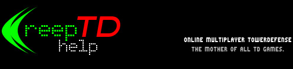

|
 Startseite / Spiel Modi |
Jeder gg. JedenCreeps werden an jeden Gegner gesendet. Wenn ein Creep ein Spielfeld durchquert, erscheint er erneut an dessen Anfang. An den NächstenCreeps werden an den nächsten Spieler (im Uhrzeigersinn) gesendet und laufen, wenn sie nicht abgewehrt werden, von dort aus der Reihe nach durch die Spielfelder aller anderen Gegner. An ZufälligenÄhnlich zu "An den Nächsten", aber die Spieler, die ein gesendetes oder durchgelaufenes Creep erhalten, werden zufällig ausgewählt. Team 2gg2Spieler 1 und 2 (oben) spielen gegen Spieler 3 und 4 (unten). Spieler 1 und 2 senden ihre Creeps an Spieler 3, Spieler 3 und 4 an Spieler 1. ÜberlebenDer Server sendet zufällig Creeps an alle Spieler. Wenn ein Creep getötet wird, steigt das eigene Einkommen. Der Gewinner ist, wer am Längsten überlebt. |